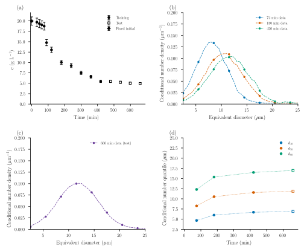
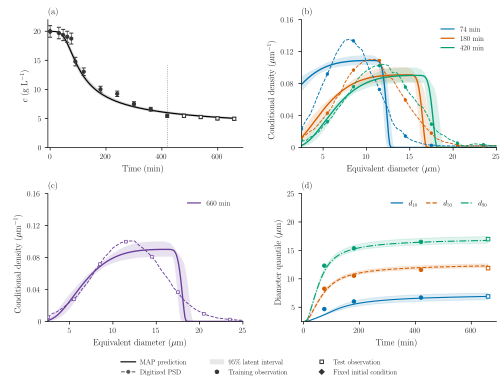
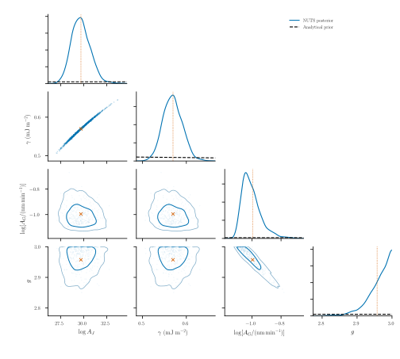
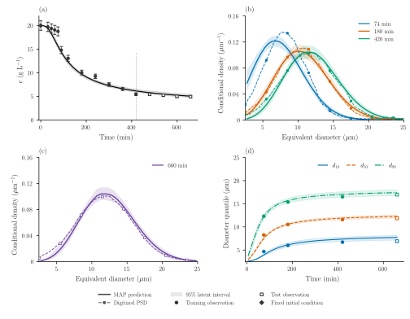
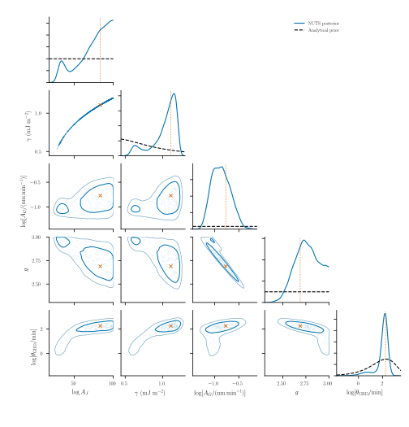
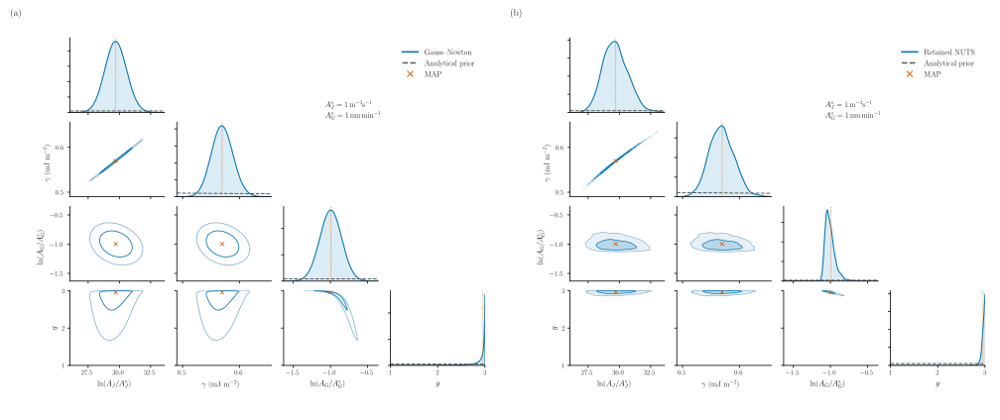
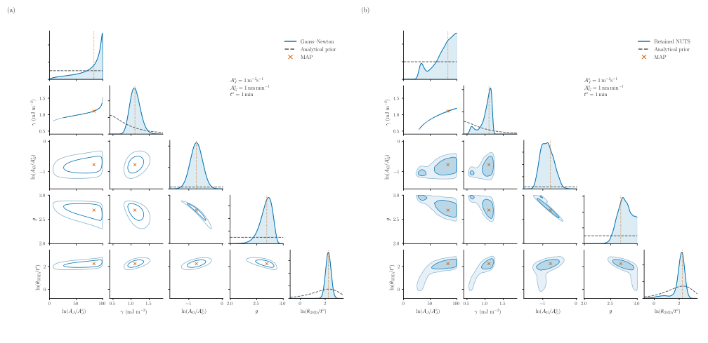

Protein crystallization: CNT and growth dispersion
Dissolved concentration measures how much protein has crystallized; a number size distribution measures how that material is divided among crystals. Here we use both to calibrate two descriptions of one isothermal lysozyme batch: CNT nucleation with a common mean growth rate, and the same model with random-fluctuation growth-rate dispersion (GRD). Later observations test their predictions. Neither model is presented as a universal kinetic law.
System and measurements
The 100 mL batch at 20 °C is from Tang et al. (2018), Figures 11(d) and 12(a). The source records describe 0.1 M sodium acetate buffer at pH 4.5, with 40 g/L protein and 10% w/w NaCl stocks. The mixed-solution salt convention and the conflicting 100/210 rpm stirring descriptions remain unresolved; we do not infer a mixing history from them.
Concentrations were measured after 0.22 μm filtration and 50-fold dilution by UV absorbance at 280 nm. Sizes are microscopy/image-analysis equivalent diameters, and these are number distributions. The separate 1 L laser-diffraction volume measurements are not used. Our supplied curves are graph reconstructions, not raw crystal counts or independent 0.5 μm measurements. The data and provenance retain the original readings and unrounded graph-read times.

Panel (a) shows concentration; its diamond fixes $c(0)=19.965841161400512$ g/L. Filled circles are the eleven training observations; open squares are the four later test observations. Panels (b) and (c) show the three training distributions at 74, 180 and 420 min and the held-out distribution at 660 min. Each density integrates to one over 2.5–25 μm, the isothermal_core window. Panel (d) shows conditional number $d_{10},d_{50},d_{90}$; dotted connections are guides only. These quantiles agree with the supplied CDFs and are not fitted again. The error bars in (a) are the assumed uncertainties below, not reported experimental standard deviations. No PSD or quantile error bars are invented.
Two population models
Let $n(L,t)$ denote number per process volume per unit equivalent diameter. Both models start with $n(L,0)=0$ and share a well-mixed, constant-volume bulk concentration $c(t)$. Their CNT nucleation and size-independent mean growth use the kinetic form of Mitchell et al. (2023), Case 3:
\[S=\frac{c}{c_*},\qquad B(\gamma)=\frac{16\pi(10^{-3}\gamma)^3\nu^2}{3(k_{\mathrm B}T)^3},\]
\[J(c)=60\exp\!\left[\log A_J-\frac{B(\gamma)}{(\log S)^2}\right],\qquad G(c)=10^{-3}A_G(S-1)^g.\]
Both rates are zero for $S\le1$. There is no extra S prefactor in J. $\log A_J$ is the natural log of the numerical prefactor in particles/(m³ s); J is returned in particles/(m³ min). Enter γ in mJ/m² and $A_G$ in nm/min; G is returned in μm/min. These conversions follow the growth units in Mitchell's estimation tables, rather than silently interpreting its inconsistent table units. This case uses Tang's original readings and a different observation model; it is not a reproduction of Mitchell's parameter estimates.
Model 1 (CNT) gives every crystal the same instantaneous growth velocity:
\[\frac{\partial n(L,t)}{\partial t} +\frac{\partial [G(c(t))n(L,t)]}{\partial L}=0.\]
Model 2 (CNT + GRD) adds independent, temporally fluctuating growth:
\[\frac{\partial n(L,t)}{\partial t} +\frac{\partial [G(c(t))n(L,t)]}{\partial L} =\frac{\partial^2[D_G(c(t))n(L,t)]}{\partial L^2},\qquad D_G(c)=\theta_{\mathrm{GRD}}G(c)^2.\]
$\theta_{\mathrm{GRD}}$ (grd_strength) is nonnegative, in minutes; D is in μm²/min. It combines relative fluctuation variance and correlation time, rather than measuring either separately. This is an effective Brownian closure, not permanent fast/slow crystal classes. D is independent of size here, so its Ito operator reduces to $D_G\,\partial^2 n/\partial L^2$. A better fit would not establish the microscopic origin of that dispersion. See the reusable SizeDiffusion contract.
For both models, the total left flux is J:
\[F(0,t)=J(c(t)),\qquad F=G n\quad\text{(CNT)},\qquad F=G n-\frac{\partial(D_G n)}{\partial L}\quad\text{(CNT + GRD)}.\]
BoundaryInjection supplies this flux once; Model 2 does not also impose $n(0)=J/G$. The base size boundaries are closed. Their remote upper edge must remain inactive, as checked by occupancy and domain extension.
The package assembly uses the same rate callbacks for both models:
using PopulationBalanceModels
include("examples/isothermal_protein_crystallization.jl")
const I = IsothermalProteinCrystallization
terms = (
growth=Growth(PolynomialRate(((p,t,ctx)->I.growth_rate(p,ctx.bulk.c),))),
primary=Nucleation((p,t,ctx)->I.nucleation_rate(p,ctx.bulk.c)/1e12,0.0),
)
cnt = PBMModel(;terms...)
cnt_grd = PBMModel(;terms...,
dispersion=SizeDiffusion(PolynomialRate(((p,t,ctx)->
p.grd_strength*I.growth_rate(p,ctx.bulk.c)^2,))),
)
methods = TermMethods(growth=MUSCL(),by_term=(primary=BoundaryInjection(:left),))build(model=:cnt) and build(model=:cnt_grd) complete this assembly and the bulk balance. The degree-zero PolynomialRate declares size independence, while its callback still uses current-stage concentration. Sectional states are bin-integrated counts divided by $10^{12}$, with lengths in μm. The same stage's full population derivative, including GRD, sets
\[\frac{\mathrm dc}{\mathrm dt} =-10^{-6}\rho k_v\sum_i L_i^3\frac{\mathrm dN_i}{\mathrm dt}.\]
Thus $c+10^{-6}\rho k_v\sum_iL_i^3N_i$ is the discrete material invariant. There is no second analytical diffusion sink. Away from boundaries, the separate continuum check is $dM_3/dt=3GM_2+6D_GM_1$: number-conserving diffusion can consume solute. First-bin nucleation uses the same centre-cubed material weight and vanishes with refinement towards zero size.
The bulk callback uses ctx.derivatives, which already contains both active transport mechanisms:
grid = Grid1D(range(0.0,50.0;length=101);coordinate=:length)
operator = compile(cnt_grd,grid;methods,bc=SizeBC())
function solute_balance(ctx,p,t)
dM3 = sum(grid.centers[i]^3*ctx.derivatives.crystals[i] for i in 1:length(grid))
(c=-1e-6*p.rho*p.kv*dM3,)
end
system = PBMSystem((crystals=operator,);bulk_rhs=solute_balance,nonnegative_bulk=(:c,))For a complete short run, build also installs the stage-wise coefficient checks used by the timestep controller:
problem = I.build(model=:cnt_grd,bins=100,p=I.parameters(grd_strength=10.0))
solution = I.cfl_solve(problem,[0.0,74.0,180.0,420.0,660.0])The active parameter specifications generate this prior table and the corner plot overlays:
| Parameter | Meaning and units | Prior | Model |
|---|---|---|---|
logAJ | Natural log nucleation prefactor AJ in particles/(m³ s) (dimensionless) | Uniform(0, 100) | Both |
gamma | Effective interfacial energy (mJ/m²) | LogNormal(log(0.64), 0.7) | Both |
AG | Mean-growth prefactor (nm/min) | log-uniform AG on [0.01, 1500] | Both |
g | Supersaturation growth exponent (dimensionless) | Uniform(1, 3) | Both |
grd_strength | Random-fluctuation growth dispersion strength (min) | Exponential(scale/mean 10 min) | CNT + GRD only |
The four common priors are inherited modeling choices, not same-data posteriors reused as prior information. The additional Exponential prior has scale/mean 10 min, not rate 10; it is a regularizing assumption, not a measured material property. Model 1 fixes GRD to zero and has no log(0) coordinate.
Fixed quantities are $T=293.15$ K, the initial concentration above, $c_*=2.16$ g/L, $\rho=1240$ kg/m³, $k_v=0.81$, $\nu=2.97\times10^{-26}$ m³/molecule and $k_{\mathrm B}=1.380649\times10^{-23}$ J/K. The molecular-volume convention follows Lin et al. (2017). Solubility, density, geometry and the diameter-to-length mapping are conditional assumptions, not additional fitted parameters.
Observation errors and inference
The initial concentration is excluded from the likelihood. The eleven later training concentrations use individual, fixed standard deviations $\sigma_{c,i}=0.05c_{\mathrm{obs},i}$. We do not infer any noise parameters. For each training PSD, 22 interior conditional-CDF ordinates at 3–24 μm form one correlated Gaussian block:
\[F_\theta(L,t)=\frac{\int_{2.5}^{L}n(\ell,t)\,\mathrm d\ell} {\int_{2.5}^{25}n(\ell,t)\,\mathrm d\ell},\qquad \Sigma_{F,ij}=(0.03)^2\exp\!\left[-\frac{|L_i-L_j|}{2\,\mu\mathrm m}\right].\]
The fixed endpoints are excluded. The 0.03 is three percentage points of CDF fraction, not 3% of each reading, a size error, a physical PSD width or GRD. These scales and the 2 μm correlation length are observation-model assumptions; Tang did not establish them experimentally. Fixed linear whitening uses Measurement.response; normalized likelihoods and the known determinant converting back to original CDF coordinates are exported. Both models use exactly the same measurements and likelihood. Derived quantiles are diagnostics.
using Optim
estimation = I.estimation_problem(model=:cnt_grd,bins=100)
fitted = I.fit_model(estimation) # three calibration-only starts
fitted.converged || error("Inspect optimizer diagnostics")
physical_parameters(estimation,fitted.minimizer,:batch)MAP optimization uses four/five inference coordinates: logit for bounded logAJ and g, log for positive γ and $A_G$, and log for GRD in Model 2 only. Physical-coordinate prior Jacobians appear exactly once. A transformed MAP is not generally a mode of the physical-coordinate density.
The retained NUTS chains used auxiliary rate coordinates, including the full inverse-map Jacobian so the declared posterior is unchanged. CNT uses sensitivity-based initial tuning; GRD uses a frozen, invertible preconditioner from calibration-only pilots, with starts near both calibration basins. Its mixture and conditional matrices describe sampler geometry, not extra populations, priors, observation noise or a verified Laplace covariance. The auxiliary growth rate is evaluated at fixed supersaturation 6; this coordinate choice does not change the physical growth law. The sampling helper and retained settings specify these transformations. Joint rank Rhat, bulk/tail ESS, energy diagnostics and divergences determine whether draws may supply figures.
All priors, observation errors and calibration choices are frozen before scoring held-out observations. The displayed 95% bands propagate parameter draws through the PBM; they are pointwise latent credible intervals, conditional on this model and fixed assumptions. They do not include new measurement noise.
Model 1: CNT

Panels match the data overview. Solid curves connect MAP bin averages at their centers; shading is the pointwise 95% latent interval. Dashed density curves are the supplied reconstructions. Filled observations train; open squares test. The vertical line marks 420 min. Panel (d) shows conditional number quantiles; undefined early segments are omitted. Density bands connect the corresponding pointwise limits at the same bin centers. No smoothing is applied to the saved bin averages. CDF residuals remain in the CSV exports. Common mean growth carries the earliest births to a finite upper front. The sharp edge near 12–17 μm is inside the size domain, not escape at its 50 μm boundary. Its plateau and abrupt cutoff miss the measured peak and tail even when several quantiles are close. Refinement changes the front's numerical rounding; it does not remove this restriction of the model.

Diagonal curves show normalized NUTS marginal summaries and dashed analytical priors. Joint KDE contours, where shown, mark approximately 68% and 95% probability. Raw draws show the thin curved prefactor–barrier relation; orange markers identify the transformed inference-coordinate MAP. The compact logarithmic axis labels use reference units $A_J^\circ=1$ particle/(m³ s), $A_G^\circ=1$ nm/min and $t^\circ=1$ min. Broad priors extend beyond these posterior-focused axes and are not renormalized over the crop. Here logAJ and γ have correlation about 0.997. The growth exponent also presses against its upper prior bound: about 36% of draws lie in the upper 1% of its declared range. These are conditional estimates with strong kinetic compensation, not four independent measurements of material constants.
Model 2: CNT with random-fluctuation GRD

The panel roles, data colors and corresponding axis limits match Model 1. The density bands propagate the population state itself; CDF uncertainty is not drawn as an arbitrary density or size band. Diffusion broadens particle histories but does not imply a Gaussian full distribution under continuous nucleation.

GRD is now a fifth inferred parameter. Correlations describe compensating kinetics and dispersion, not evidence that every coefficient is independently identified: logAJ and γ correlate by about 0.985, while log(AG) and g correlate by about −0.95. The broad logAJ interval reaches close to its upper prior bound; 2.6% of draws occupy the upper 1% of that range. GRD improves some size profiles without resolving this kinetic ambiguity. Bound contact must be judged alongside systematic residuals and numerical error.
Local uncertainty around the MAP
The package offers two local Gaussian calculations alongside MCMC. Gauss–Newton uncertainty uses measurement-weighted prediction sensitivities and actual prior curvature. Full-Hessian Laplace additionally retains residual-weighted second prediction derivatives. Both use the declared inference coordinates: logit(logAJ), log(γ), log(AG), logit(g), and, for GRD, log(θ), with the required prior Jacobians. Sampler tuning matrices are separate from these uncertainty calculations.
# Use the same estimation problem and converged MAP as above.
local_gaussian = gauss_newton_approximation(estimation,fitted)
kinetic_covariance = marginal_covariance(estimation,local_gaussian)
approximate_draws = parameter_draws(estimation,local_gaussian;n=1000,seed=23)Both sensitivity-based calculations pass the independent derivative and joint information checks. The table concerns the existing discrete likelihood; it is not a grid-error estimate or evidence that every kinetic parameter is well identified. All nuisance/kinetic coordinates would enter the joint calculation; this particular fit has only its four/five kinetic coordinates.
| Model | Status | Data Jacobian rank | Precision condition number | Relative information discrepancy |
|---|---|---|---|---|
| cnt | accepted | 4 | 2.21e+06 | 0.0236% |
| cnt_grd | accepted | 5 | 3.32e+07 | 0.105% |


Left: the inference-coordinate Gaussian transformed to the displayed parameter coordinates. Its marginal densities are analytical; the joint curves transform Gaussian ellipses containing 68% and 95% probability, rather than claiming highest-density regions in physical coordinates. Right: the retained NUTS posterior. Axes, prior overlays and MAP markers match. Separate manuscript-size CNT and GRD approximation panels are available. Gaussian draws are not truncated to the prior; support violations are exported.
Numerical acceptance does not establish posterior-shape accuracy. For CNT, the approximate 95% interval for g extends down to about 2.11, compared with 2.88 for MCMC. For GRD, its dispersion interval is about 6.19–14.54 min, while MCMC gives 1.27–13.60 min. The local Gaussian misses the low-dispersion tail and does not reproduce the full curved, two-basin compensation. These are local approximation intervals, not replacements for the MCMC intervals. Marginal summaries for CNT and GRD retain both calculations. The physical fit figures continue to use MCMC-derived latent bands; no new sampling, refitting or predictive propagation was performed.
Full-Hessian Laplace still fails its unchanged verification checks: CNT's Hessian disagreement is 7–24%; GRD's weakest curvature is below its absolute verification resolution. The CNT and GRD rejection comparisons remain available. No covariance is substituted for those failed calculations. The sensitivity-based calculation verifies its own approximate information matrix, rather than relaxing the Laplace checks.
Separate source-bound receipts record the reviewed uncertainty-only API additions, stationary refactors, unchanged dependencies and reproduced posterior values at both saved MAPs plus 14/17 retained CNT/GRD chain-end or tail points. Original producer manifests, posterior draws and numerical production tables remain intact.
Estimates and model comparison
The table reports the inference-coordinate MAP transformed to physical units, then posterior medians and equal-tailed 95% intervals. $A_G$ and GRD are in physical units even though their corner axes use natural logarithms.
| Parameter (units) | CNT MAP | CNT median [95% interval] | CNT + GRD MAP | CNT + GRD median [95% interval] |
|---|---|---|---|---|
logAJ (dimensionless) | 29.71 | 29.65 [27.92, 31.77] | 83.36 | 79.2 [31.58, 99.05] |
gamma (mJ/m²) | 0.5696 | 0.5683 [0.5288, 0.6126] | 1.107 | 1.081 [0.6083, 1.194] |
AG (nm/min) | 0.3695 | 0.3618 [0.3348, 0.4313] | 0.4623 | 0.4152 [0.3044, 0.6121] |
g (dimensionless) | 2.957 | 2.969 [2.881, 2.999] | 2.689 | 2.759 [2.519, 2.984] |
grd_strength (min) | 0 (fixed) | — | 9.486 | 8.545 [1.27, 13.6] |
| Model | Training concentration RMSE (g/L) | Test concentration RMSE (g/L) | Max Rhat | Min bulk/tail ESS |
|---|---|---|---|---|
| cnt | 0.979 | 0.171 | 1.0058 | 782/681 |
| cnt_grd | 1.29 | 0.24 | 1.0018 | 2542/2200 |
| Model | PSD time (min) | Use | CDF RMSE (fraction) | W2 (µm) | d10 error (µm) | d50 error (µm) | d90 error (µm) |
|---|---|---|---|---|---|---|---|
| cnt | 74 | calibration | 0.0546 | 1.488 | -0.998 | -0.633 | -0.995 |
| cnt | 180 | calibration | 0.0262 | 0.850 | -0.475 | 0.288 | -0.113 |
| cnt | 420 | calibration | 0.0260 | 0.793 | -0.100 | 0.408 | -0.056 |
| cnt | 660 | validation | 0.0258 | 0.758 | 0.002 | 0.414 | -0.228 |
| cnt_grd | 74 | calibration | 0.0441 | 0.823 | -0.718 | -0.735 | -0.101 |
| cnt_grd | 180 | calibration | 0.0079 | 0.226 | 0.109 | 0.037 | 0.331 |
| cnt_grd | 420 | calibration | 0.0245 | 0.488 | 0.665 | 0.331 | 0.543 |
| cnt_grd | 660 | validation | 0.0279 | 0.547 | 0.825 | 0.396 | 0.428 |
CDF RMSE is an unweighted fraction over the supplied tabulated ordinates (including the two fixed endpoints), rather than the whitened likelihood. W₂ compares conditional quantiles, using linear interpolation of the supplied CDF table; its units are μm. Quantile errors are predicted minus observed.
The MAP tradeoff is clearest at 180 min: GRD reduces W₂ from about 0.85 to 0.23 μm, while training concentration RMSE increases from 0.98 to 1.29 g/L (test RMSE: 0.17 to 0.24 g/L). At 660 min W₂ improves but CDF RMSE does not; these metrics weight distribution discrepancies differently. Both models still put the 74-min median roughly 0.6–0.7 μm below the reading. Broadening alone does not resolve every shape or timing discrepancy.
Concentration constrains transferred material; conditional PSDs constrain shape within the observation window and do not measure absolute particle number. Coefficients, exponents, the CNT barrier and GRD can compensate. Successful chain diagnostics do not establish structural identifiability, numerical convergence or physical adequacy. The raw MAP posterior values have different dimensions and are not a Bayes factor or model evidence. A positive GRD interval under its continuous positive prior is not, by itself, a test against the separate zero-GRD model. The comparison remains conditional on graph digitization, solubility, molecular volume, shape, detection and the diameter convention. The final concentration is not assumed to be equilibrium.
Reproduce and verify
The model and likelihood source and sampling-coordinate helper are downloadable. The paper driver and configuration handle complete reproduction and exports.
From the repository root, using the checkout and the paper plotting environment:
julia --project=paper -e 'using Pkg; Pkg.develop(path=pwd()); Pkg.instantiate()'
python -m pip install -r paper/requirements.txt
# Observations and data-only figure: no optimization or sampling needed.
julia --project=paper paper/protein/run.jl --data-only
python paper/protein/plot.py --data-only
# Short native forward checks, both models.
julia --project=paper paper/protein/run.jl --smoke
# MAP only, or full reproduction including BOTH posterior corners and bands.
julia --project=paper paper/protein/run.jl --map
julia --project=paper paper/protein/run.jl --full
julia --project=paper paper/protein/run.jl --verify
python paper/protein/plot.py
python test/protein_results.py
julia --project=docs docs/make.jlThe figures can be restyled from the retained production exports without repeating the simulations or parameter estimation:
python paper/protein/plot.py
# New calculations, with separate outputs and no sampling/prediction propagation:
julia --project=paper paper/protein/run.jl --laplace
python paper/protein/plot.py --laplace
# Sensitivity-based covariance and retained-MCMC comparisons:
julia --project=paper paper/protein/run.jl --gauss-newton
python paper/protein/plot.py --gauss-newton
python test/protein_publication.pyThis plotting-only command validates the saved manifests and leaves numerical result tables unchanged. It exports matching 300-dpi PNGs and vector PDF/SVGs. --compatibility-only runs the reviewed retained-target checks without calculating curvature. Analysis files are separate from the immutable cnt/, cnt_grd/ and shared/ inputs, under paper/protein/data/analysis/. The analysis modes never enter the production cache-invalidation branch.
Use --model=cnt or --model=cnt_grd for one model. --sample is an alias for --full; the no-flag default is MAP-only. Sampling uses isolated local workers and checkpoints each chain; matching completed results can be resumed. Explicit --warmup=, --samples=, --chains=, --seed= and --predictive-draws= flags record changed budgets. Sampling must pass Rhat ≤ 1.01, bulk/tail ESS ≥ 400, BFMI ≥ 0.3 and zero retained divergences/depth hits before producing bands.
Both calculations use conservative bin counts, MUSCL() growth and native SSPRK33() (SSPRK3) time integration. Model 2 adds the centred Ito flux of FiniteVolumeDiffusion(), the default method for SizeDiffusion. Population and concentration advance in the same RK stages.
The primary CNT mesh has 400 bins on 0–50 μm; GRD uses 100 bins. The smoother GRD population permits a cheaper mesh: calibration-only 100/200-bin differences were at most 0.0032 in CDF fraction at tested parameter points, compared with the assumed 0.03 uncertainty, and below 0.007 g/L in concentration. GRD is refitted and sampled on that mesh, with 200/400-bin checks retained separately; no coarse/fine posterior samples are mixed. The native combined growth/diffusion recommendation adds outgoing rates: $G/\Delta L+2D_G/\Delta L^2$ for an interior uniform bin. The controller bounds rates in short intervals and rejects a cap violation at any RK stage. It does not assume suggest_dt automatically adapts simulate. Native positivity checks remain enabled, with no clipping or seeds. ForwardDiff differentiates the locally fixed timestep schedule; this is not a claim of differentiability across controller or limiter branch changes. The verification command checks gradients again at retained posterior points. Fixed-parameter time, size and domain checks, representative posterior checks and a separate finer-grid refit are exported. The discrete material invariant is checked separately from continuum/grid accuracy.
| Model | Size bins | Steps (displayed MAP trajectory) | Max CDF change: time / size / domain | Max material error (g/L) |
|---|---|---|---|---|
| cnt | 400 | 859 | 4.8e-06 / 0.0041 / 0 | 1.1e-12 |
| cnt_grd | 100 | 741 | 1e-07 / 0.0024 / 0 | 1.1e-12 |
CDF changes are absolute fractions, comparable with the assumed 0.03 error. Time checks halve both step controls; size checks double the bin count; domain checks extend 50 to 75 μm at unchanged bin width. These are fixed-parameter checks, distinct from the separately exported calibration-only finer-grid refit. The exported third-moment rate defect compares the numerical residual with $3GM_2+6D_GM_1$ evaluated using resolved moments. For GRD its largest relative defect decreases under size refinement. This is a weak-form consistency check, separate from the exact discrete material balance and from a full continuum solution.
Numerical settings, source/data hashes, producer revision/dirty state, seeds, actual steps, sampler diagnostics and individual residuals are in paper/protein/data/{cnt,cnt_grd}. CSV, Markdown and LaTeX tables are generated from those same draws and prior specifications. PDF/300-dpi PNG/SVG figures are shared by the paper and manual. Old inferred-noise results are archived as a historical target, not reused here.